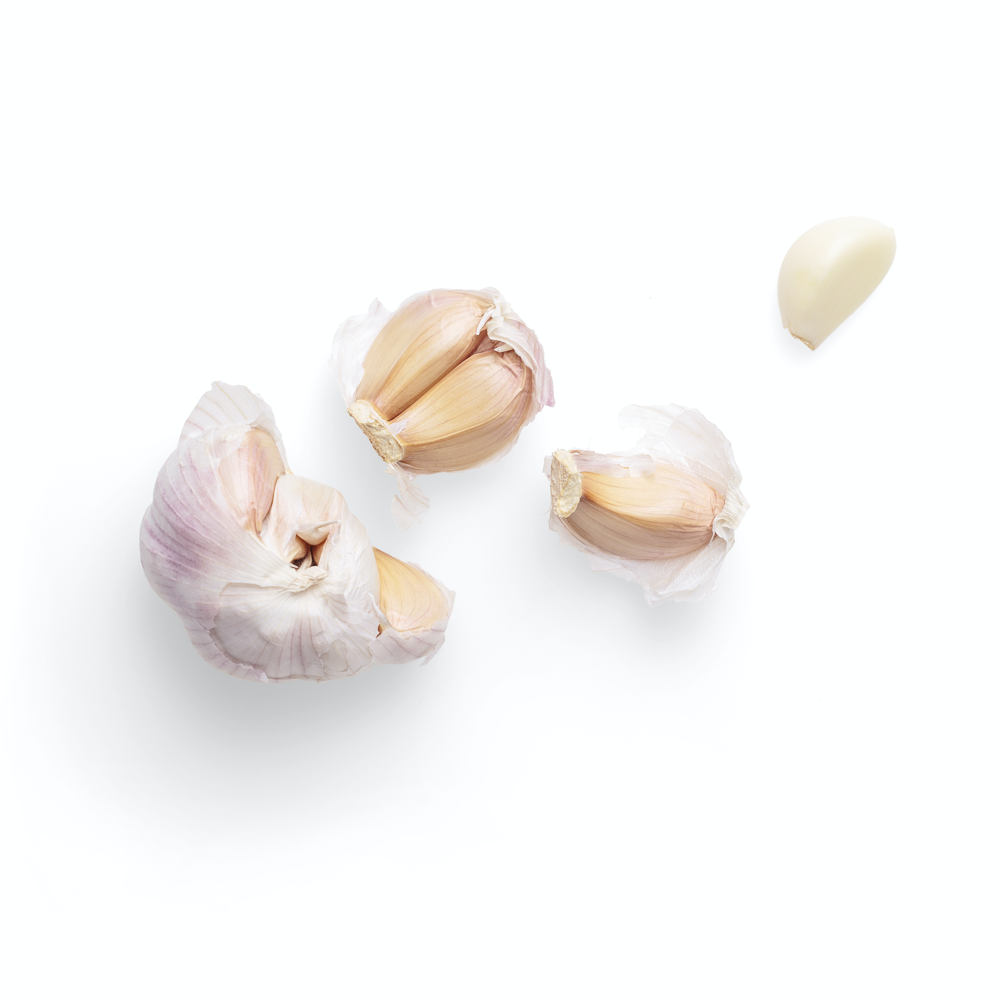

한식의 기본 조미료에는 다음과 같은 것들이 있다. 고추장, 된장, 간장, 식초, 설탕, 후추, 참기름. 그러나 조미료라고 부르기 애매한 것 중 한식양념에 빠져서는 안될 것이 있다. 바로? 
그렇다. 다진 마늘이다. 우스갯소리로 마늘을 왕창 때려넣은 감바스를 한식이라고 부를만큼 마늘은 한식에 빠져서는 안되는 식재료다.
그리고 채식을 하기 위한 필수(는 아니지만 있으면 매우 좋은) 조미료에는 연두가 있다.
그 외에 필요한 조미료들과 각각의 조미료 대한 설명은 차차 다루기로 하겠다.